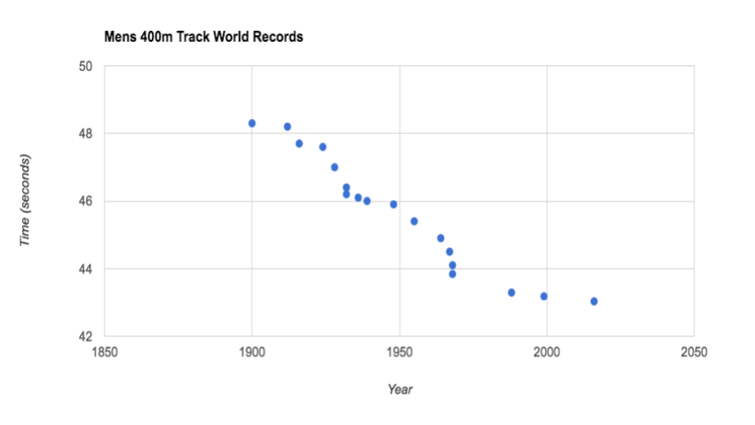
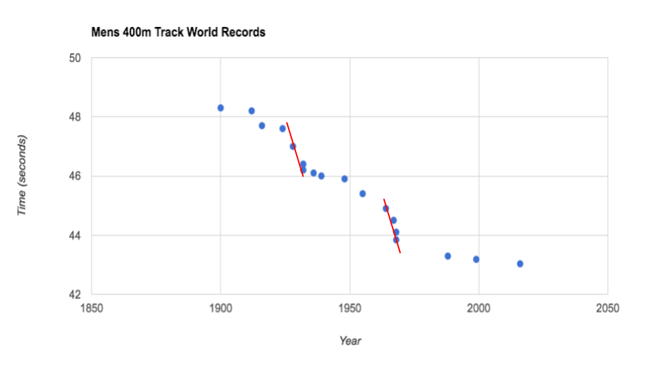
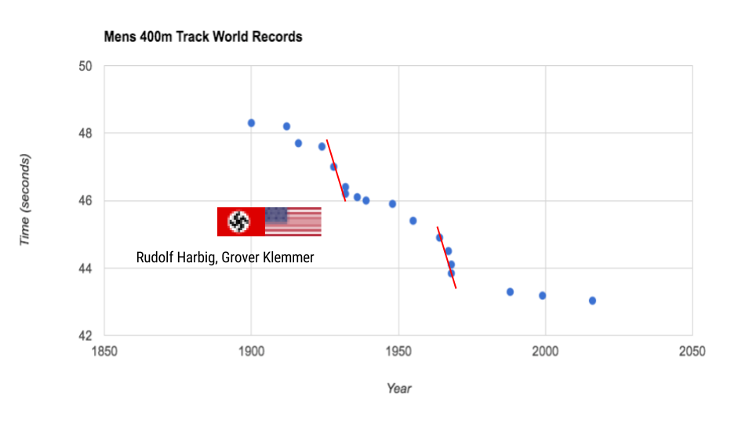
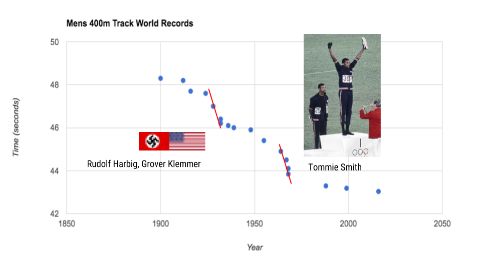

If we can find out about the stories, we gain insight.
The Race of Men’s 400m Race
Let’s look at the story of the Men’s 400m world record times over the years.

The most recent record was set in 2016 at Rio de Janeiro, Brazil by
Wayde van Niekerk by breaking a 17 year-old record, previously set back
in 1999.

But such droughts of record breaking are not very common. There
have been two times in history that the records were repeately
broken in quick succession.

Once in 1939-1941, during the WWII, records were set and broken
in rapid succession by athlets from Nazi
Germany and USA.

Another time in the late 1960s, records were broken by a series
of black athletes (Tommie Smith, 1967 and Larry James, 1968) in USA,
coinciding with the civil rights movement.
This talk is about
Socio-economical opportunties of data over the last 5000 years (from 3100 B.C.
2017 A.D.)
The reactionary invention of technology to gather and analyze data, and
the role of Computer Science and Data Science in the emerging economy